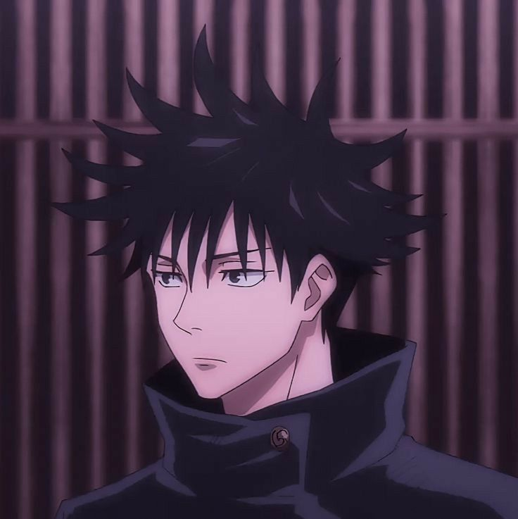

Contacto
- Sede: Colegio Técnico de Hechicería de Tokio
- Rango: Hechicero de Grado 1
- Facebook: Megumi Fushiguro
- Correo: megumifusiguro@gmail.com
Habilidades
- Técinica de las Diez Sombras
- Gran Intelecto Táctico
- Combate Cuerpo a Cuerpo
- Expansión de Dominio (Incompleta)
Megumi Fushiguro

Formación Académica
Estudiante de primer año en el Colegio Técnico de Hechicería de Tokio, bajo la tutela de Satoru Gojo. Especializado en exorcismo de maldiciones de alto grado. Actualmente es el líder del Clan Zenin.
Experiencia en Combate
Participación activa en el Incidente de Shibuya y en la contención de objetos malditos de grado especial (Dedos de Sukuna). Experto en el uso de herramientas de soporte y gestión de energía maldita.